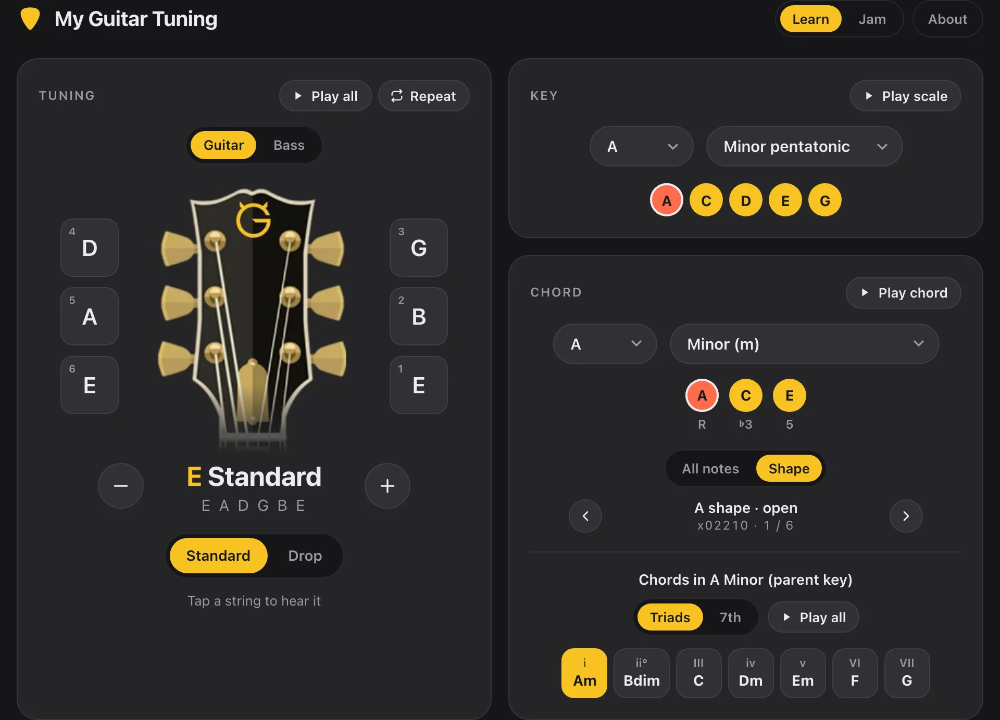
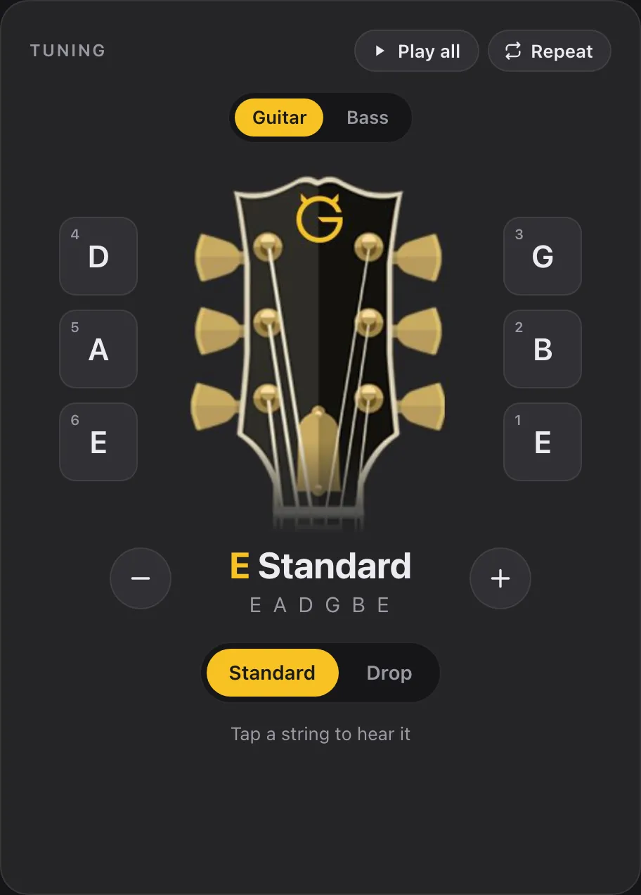
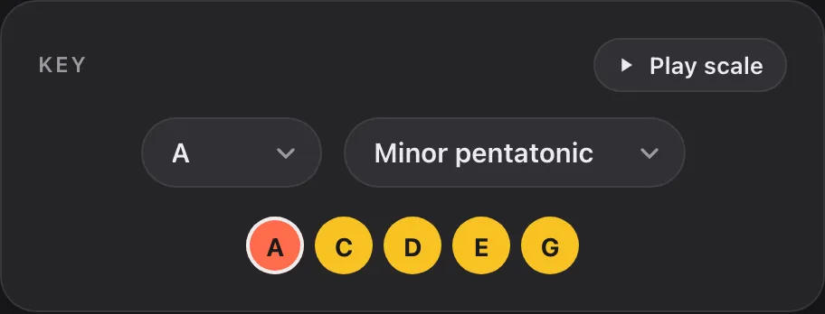
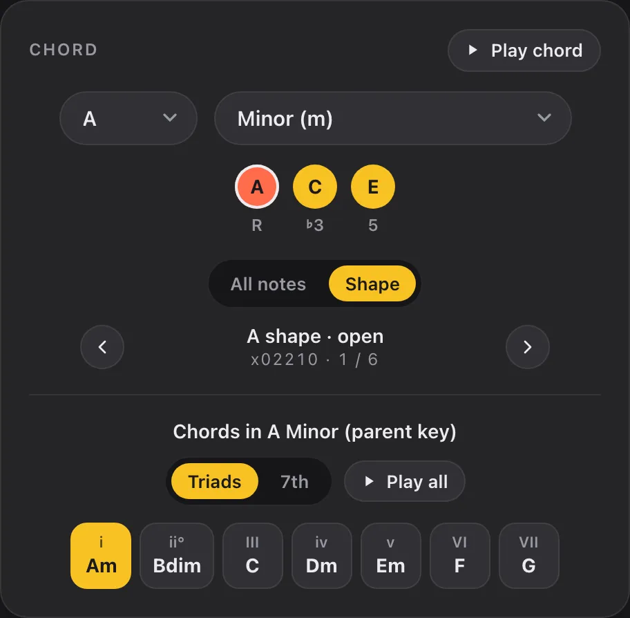
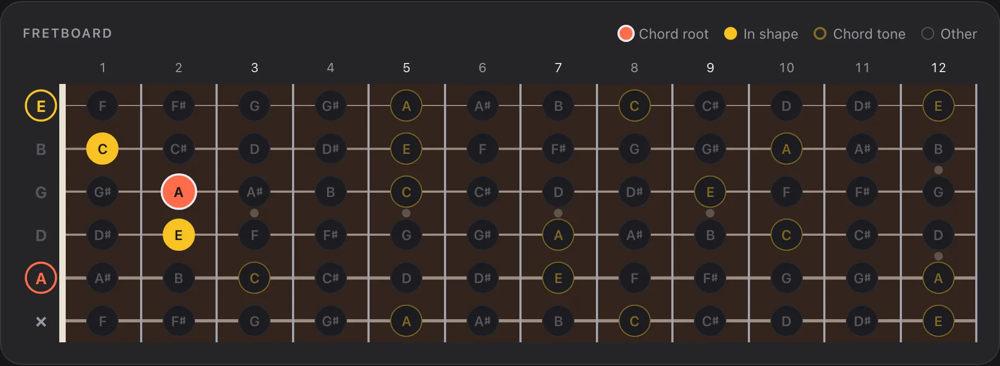
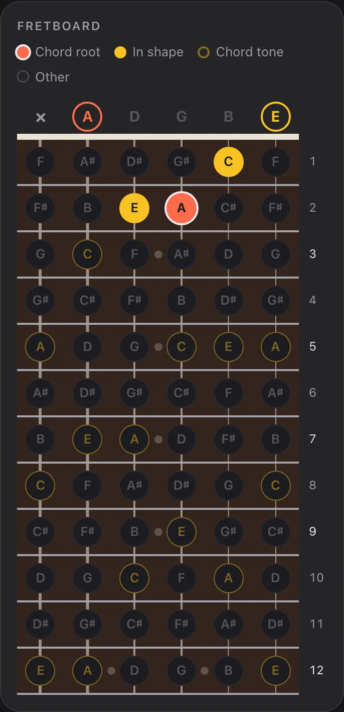
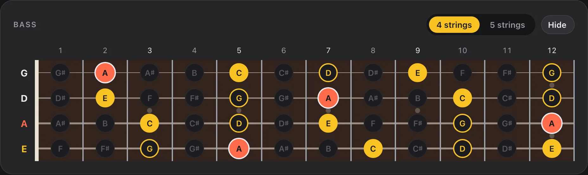
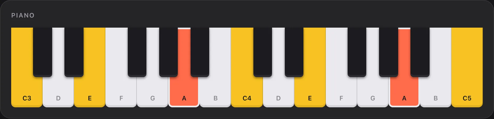
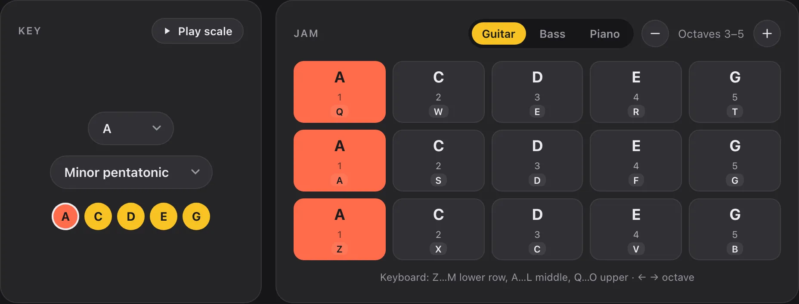

About My Guitar Tuning
A web app for guitar and bass players. It plays reference notes so you can tune by ear, shows keys and chords on a guitar fretboard, a bass fretboard and a piano, finds chord shapes for your tuning, and has a Jam mode — a pad with only the notes of your key.
It runs in the browser on a computer or a phone. There is nothing to install and no account.

Quick start
-
Set the tuning
In Tuning, choose Guitar or Bass. Use − and + to move the tuning a semitone down or up, and choose Standard or Drop. Tap a string button on the headstock to hear it and tune your instrument by ear.
-
Choose a key
In Key, pick the root note and the scale. Its notes light up on both fretboards and on the piano.
-
Choose a chord
In Chord, pick a chord or tap one under Chords in key. Switch to Shape to see one fingering at a time on the guitar fretboard.
-
Play
Tap notes on the fretboards, piano keys or note circles, or press Play scale and Play chord.
-
Jam
Switch the header to Jam and play the notes of the key on the pad — with the mouse, your fingers or the computer keyboard.
Learn | Jam
The switch in the top right corner of the app chooses what you see.
- Learn
- All blocks: Tuning, Key, Chord, Fretboard, Bass and Piano. The app always opens in Learn.
- Jam
- Hides Tuning and Chord and shows the Jam pad next to Key. The fretboards and the piano stay.
- About
- Opens this page.
Switching modes stops anything that is playing.
Tuning

Reference notes for tuning by ear. One tuning is shared by the guitar and the bass, like in a band: guitar D Standard goes with bass D Standard.
- Guitar Bass
- Which headstock is shown: the guitar with 6 strings or the bass with 4 or 5 strings (set in Bass). It also chooses the instrument that sounds for the string buttons, Play all, the note circles in Key and Chord, Play scale, Play chord, Chords in key and the piano keys. The fretboards and the tuning stay the same.
- String buttons
- The open note of each string, with the string number in the corner. Thick strings are on the left, thin ones on the right. Tap a button to hear the string.
- − +
- Tune all strings a semitone down or up. The name shows the note of the thickest string (E Standard, D♯ Standard, D Standard…), and the line below lists the open strings from the thickest. You can go 5 semitones above E Standard and 6 below; one more step jumps to the other end.
- Standard Drop
- Drop keeps the thickest string on the note in the name and tunes the other strings a whole step higher, so the thickest string sits a whole step lower than usual. For Drop D, press − twice (D Standard), then Drop: D A D G B E.
- Play all
- Plays the open strings one by one, from the thickest.
- Repeat
- When it is on, a tapped string repeats every 2.5 seconds, so both your hands are free for the tuning pegs. Tap the same string again to stop, or another string to switch.
- Line at the bottom
- Shows the string you hear, its note and frequency, for example “String 6 · E2 · 82.41 Hz”.
With the same tuning, the bass is tuned like the four thickest guitar strings, an octave lower: E Standard is E A D G, Drop D is D A D G. A 5-string bass adds a low string a fourth below: B E A D G, and the name follows it — guitar D Standard is A Standard on a 5-string bass. Note names on the headstock always use sharps.
Changes Fretboard Bass Chord shapes Sound of Key, Chord and Piano
Key

- Root list
- Off or one of the 12 notes (C, C♯ / D♭, D…). Off turns the key highlight off.
- Scale list
- 11 scales in three groups. Major & minor: Major (Ionian), Minor (Aeolian), Harmonic minor. Pentatonic & blues: Major pentatonic, Minor pentatonic, Blues. Modes: Dorian, Phrygian, Lydian, Mixolydian, Locrian.
- Note circles
- The notes of the scale; the root is red. Tap a circle to hear the note.
- Play scale
- Plays the scale up to the octave. Each note lights up on the circles, both fretboards and the piano as it plays.
Notes are named the way the key writes them: F major has B♭, D minor has B♭, A harmonic minor has G♯. Without a key, notes are named with sharps.
Changes Fretboard Bass Piano Chords in key Jam pad Note names (♯ or ♭)
Chord

- Root and type lists
- The root (Off or one of 12 notes) and one of 13 chord types: Major, Minor (m), Dominant 7 (7), Major 7 (maj7), Minor 7 (m7), Minor-major 7 (m(maj7)), Diminished (dim), Half-dim (m7♭5), Diminished 7 (dim7), Augmented (aug), Augmented major 7 (maj7♯5), Sus2, Sus4.
- Note circles
- The chord notes with their degrees (R, 3, ♭3, 5, ♭7…). Tap to hear a note.
- Play chord
- On the guitar, strums the selected shape. On the bass, plays the chord as an arpeggio from low to high — low notes together sound muddy.
- All notes Shape
- What the guitar fretboard shows: every note of the chord, or one playable shape.
- ‹ ›
- In Shape view, step through the shapes and hear each one. The name tells where the shape is (“A shape · open”, “E shape · barre, fret 5”; in tunings other than Standard it names the string of the lowest note, like “Bass on 6th string”), then the shape from the thickest string (x02210) and its number (1 / 6).
- Chords in key
- When a key is chosen: its chords with Roman numerals. Tap a chord to choose and hear it, tap it again to turn it off. Pentatonics show the chords of the parent key (A minor pentatonic → A minor); Blues shows I, IV and V.
- Triads 7th
- Three-note chords or seventh chords in the list.
- Play all
- Plays every chord of the key in turn and comes back to the first one, showing each chord on the fretboards.
Changes Fretboard (and shapes) Bass Piano
Fretboard


- A 6-string guitar neck with the open strings and frets 1–12. Fret numbers are on top, the open string notes on the left; the thinnest string is at the top.
- Tap any note to hear it on the guitar, at its real pitch.
- Notes are colored by the key and the chord; the legend in the top right explains the colors and changes with what you choose. See Highlight colors.
- Chord shapes are shown only here. In Shape view, an open string that is played has a ring, and a string that is not played has an ×.
- On a phone the neck turns vertical, like a chord chart: frets go down and the thickest string is on the left.
Bass

- 4 strings 5 strings
- A 4-string bass (E A D G in E Standard) or a 5-string bass with a low B. This also sets the bass headstock in Tuning.
- Hide Show
- Folds the bass fretboard away or brings it back.
- Notes
- Tap a note to hear it on the bass, an octave below the guitar. The tuning is the same as the guitar’s, and so are the colors. With a chord chosen, all its notes are shown — there are no shapes on the bass.
The string count and Hide / Show are remembered.
Piano

- Two octaves, C3 to C5. On a phone, one octave: C4 to C5.
- The same colors as the fretboards, and note names that follow the key.
- Tap a key to hear it — with the guitar sound, or the bass sound when Bass is chosen in Tuning.
- When a note plays anywhere in the app, its key flashes (in the nearest octave you can see).
Depends on Key Chord Tuning (sound only)
Jam

Only in Jam mode. The pad holds only the notes of the key chosen in Key, so every note fits. Three rows are three octaves — the top row is the highest. In each row the notes go up from the root; root buttons are red. Each button shows the note, its number in the scale and its keyboard key. Without a key, the pad shows the hint “Choose a key above — its notes will appear here”.
- Guitar Bass Piano
- The sound of the pad. Guitar and Bass ring out like a plucked string. Piano sounds while you hold the button and fades when you let go. This changes only the pad, not the tuning or the fretboards.
- − +
- Move the pad an octave down or up; the label shows the octaves of the rows, for example Octaves 3–5. Each sound has its own range (see the table).
- Pad buttons
- Click, tap with several fingers at once, or slide a finger across the buttons to play each one. Playing the pad doesn’t scroll the page. You can also use the computer keyboard.
| Sound | Starts at | Can move from … to |
|---|---|---|
| Guitar | Octaves 3–5 | 2–4 … 4–6 |
| Bass | Octaves 1–3 | 0–2 … 2–4 |
| Piano | Octaves 3–5 | 1–3 … 5–7 |
- A pressed button lights up, and the same note flashes on the guitar fretboard, the bass fretboard and the piano.
- Playing the pad stops Play scale and Play all.
- The sound and the octaves are remembered.
Depends on Key Learn | Jam
How the blocks connect
What you choose on the left changes the blocks on the right.
-
Learn | Jamheader
-
− + · Standard | DropTuning
-
Guitar | BassTuning
-
Keyroot and scale
-
Chordroot, type, shape
-
4 strings | 5 stringsBass
-
Guitar | Bass | Piano · − +Jam
- Jamonly the pad’s sound and octaves
Highlight colors
The fretboards, the piano and the note circles use the same colors. The words in quotes are the legend above the guitar fretboard; it changes with what you choose.
-
“Root” / “Chord root” The root of the key, or the root of the chord when a chord is chosen. The white ring lets you find it even if red and gold look alike to you.
-
“In key” / “Chord tone” / “In shape” The notes of the key when no chord is chosen, the notes of the chord when one is, and the notes of the shown shape in Shape view.
-
“In key” (gold ring) When both a key and a chord are chosen: notes of the key that are not in the chord. Not drawn on the guitar fretboard or the piano in Shape view.
-
“Chord tone” (faded, Shape view) Notes of the chord that are not in the shown shape — still visible, but the shape stands out.
-
“Other” Notes outside the key and the chord.
-
Open strings in Shape view A ring means the open string is played; × means the string is not played.
With no key and no chord chosen, nothing is highlighted.
Sound
- Exact pitch. Every note is tuned to A = 440 Hz with an error of a small fraction of a cent, so the open strings in Tuning work as a reference: play a string in the app (or turn on Repeat), play the same string on your instrument and tune until they match.
- Bass is an octave lower. The bass sounds an octave below the guitar: the low E of a bass is E1 (41.20 Hz), of a guitar E2 (82.41 Hz); the low B of a 5-string bass is B0 (30.87 Hz). Note circles, Play scale and Play chord also go an octave lower when Bass is chosen in Tuning.
- Sound starts after your first tap. Browsers don’t let a page play sound before you click or tap something, so the first sound comes with your first tap.
- Small speakers. Laptop and phone speakers barely play the lowest bass notes (30–60 Hz). You will mostly hear their overtones; the pitch is still right. Headphones or bigger speakers let you hear them fully.
- No recordings. All sounds are made in the browser: the guitar and the bass are a model of a plucked string, the Jam piano is built from harmonics.
| What you play | Sound |
|---|---|
| String buttons, Play all, note circles, Play scale, Play chord, Chords in key, piano keys | The instrument chosen in Tuning: Guitar or Bass |
| Notes on the Fretboard | Guitar |
| Notes on the Bass fretboard | Bass |
| Jam pad | The Jam switch: Guitar, Bass or Piano |
Keyboard
In Jam mode, three rows of letter keys play the three rows of the pad, note by note from the left.
- Q … O — top row of the pad
- A … L — middle row
- Z … M — bottom row
- ← → — octave down / up
A row of the pad can be shorter than a row of keys. Then the extra keys go on into the next row up of the pad, and keys past the top row do nothing:
| Scale | Z X C V B N M | A S D F G H J K L | Q W E R T Y U I O |
|---|---|---|---|
| 7 notes: Major, Minor, Harmonic minor, modes | Z–M: bottom 1–7 | A–J: middle 1–7 K L: top 1–2 |
Q–U: top 1–7 I O: nothing |
| 6 notes: Blues | Z–N: bottom 1–6 M: middle 1 |
A–H: middle 1–6 J K L: top 1–3 |
Q–Y: top 1–6 U I O: nothing |
| 5 notes: Major and Minor pentatonic | Z–B: bottom 1–5 N M: middle 1–2 |
A–G: middle 1–5 H J K L: top 1–4 |
Q–T: top 1–5 Y U I O: nothing |
- The letter is printed on each pad button (not on touch screens).
- The keys work only in Jam mode, not while a list is open or selected, and not together with Ctrl, Cmd or Alt.
- Holding a key doesn’t repeat the note. With the Piano sound, the note lasts while you hold the key.
- The keys go by their place on the keyboard, not by the letter, so they work with any keyboard layout.
| Key | What it does |
|---|---|
| ← → | Jam mode: move the pad an octave down or up |
| Tab | Move between buttons and lists |
| Enter Space | Press the selected button. String buttons, note circles, fretboard notes, piano keys and pad buttons play their note |
Limits and tips
What the app can’t do yet
- The fretboards show the open strings and frets 1–12 only, and chord shapes are found only up to the 12th fret.
- Chord shapes are for the guitar only. The lowest note of a shape is always the root (no inversions), a shape spans at most 4 frets, and up to 8 shapes are shown per chord.
- Tunings: only Standard and Drop, moved by semitones, and one tuning for both the guitar and the bass. There are no other tunings and no way to tune single strings.
- A 6-string guitar and a 4- or 5-string bass only.
- No microphone tuner: the app plays reference notes and you tune by ear.
- The piano has two octaves (one on a phone).
- Jam has no recording and no metronome.
- The key, the chord, the tuning and Learn | Jam are not saved: every visit starts in Learn, E Standard, with no key and no chord.
Where your settings are kept
The app remembers a few choices in your browser’s local storage: Guitar or Bass in Tuning, the bass string count, whether the Bass fretboard is hidden, and the Jam sound and octaves. They stay in this browser on this device and are not sent anywhere. Clearing the site data resets them; a private window may not keep them.
Tips
- Tuning by ear: turn on Repeat, tap a string and tune while it repeats.
- To see the whole key around a chord, choose both a key and a chord: key notes outside the chord get a gold ring.
- A chord chosen in Learn stays highlighted on the fretboards in Jam. Set the chord to Off before switching to see the whole key.
- In Jam, after you pick a key with the mouse the computer keyboard plays the pad right away. If the keys stop working, click the pad once.